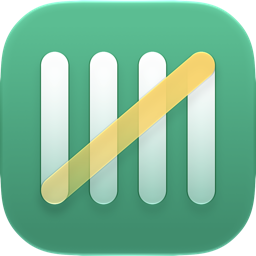

BookyPolítica de privacidad
Booky guarda tus datos en tu iPhone y, si tienes sesión en iCloud, en la base de datos privada de tu cuenta de iCloud (CloudKit), a la que solo tú tienes acceso. El desarrollador no tiene servidores y no recibe tus compras ni ningún dato personal, salvo lo que tú envíes (un reporte de lectura de un ticket, un comentario de TestFlight o un correo a soporte; ver abajo) y, si usas la beta, los datos de uso y de fallos que TestFlight comparte con el desarrollador (ver «Beta de TestFlight»); la app no incluye analítica, publicidad ni SDK de terceros.
Qué datos maneja la app y dónde viven
- Compras. Comercio, monto, moneda, fecha, categoría y nombre de la tarjeta. Se guardan en tu iPhone (base de datos local de la app) y en tu iCloud privado, para que no los pierdas al cambiar de teléfono y aparezcan en tus otros dispositivos con la misma cuenta. Puedes apagar la copia en Ajustes del iPhone → [tu nombre] → iCloud → Booky.
- Avisos y toques de Apple Pay. La automatización de Atajos que tú instalas le pasa a Booky, de cada notificación de Wallet, su título, su subtítulo y su texto (el nombre de la tarjeta o del banco, el comercio y el monto) y, de cada toque de una tarjeta o un pase en Wallet, el comercio, el monto, la moneda, el nombre de la tarjeta o del pase y el campo «nombre» de la transacción. Booky lo procesa en el dispositivo para crear la compra y no se conecta a tu banco. El atajo que ofrece Booky solo escucha las notificaciones de Wallet (no lee otras notificaciones ni tu correo), pero el disparador de toque se activa con cualquier pase de Wallet, como una llave o un pase de transporte, así que Booky puede recibir un toque que no es un pago.
- Registro de capturas. Cada vez que la automatización llama a Booky queda una línea en Ajustes → Registro de capturas, en tu iPhone y en tu iCloud privado: para una compra, su resumen (comercio, monto y tarjeta). Si un aviso o un toque no trae monto, Booky no crea ninguna compra y solo deja una línea: con hasta 80 caracteres del texto del aviso o, en un toque, con el nombre de la tarjeta o del pase y el comercio, si lo trae. Si un toque trae un texto de monto que Booky no entiende, la línea lleva ese texto y el comercio. Esas líneas se ocultan a los 7 días y Booky las borra, también de iCloud, la siguiente vez que se abre. Se quedan, sin fecha de borrado, la línea de cada compra (comercio, monto y tarjeta, también después de borrar la compra) y la de un aviso cuyo monto no se entendió (con ese texto y el comercio): la app no tiene un botón para quitarlas, y se borran al eliminar los datos de Booky de iCloud y la app. Si Booky logra leer un monto y un comercio en el aviso, lo anota como compra aunque el aviso no fuera de un pago (una transferencia, por ejemplo); puedes borrarla.
- Ubicación (opcional). Solo si tú añades «Obtener ubicación actual» a tu propia automatización, junto con «Registrar compra» (el atajo que ofrece Booky no la incluye). Las coordenadas se guardan junto con esa compra en tu iPhone y en tu iCloud privado, y no se usan para nada más: no se envían a Google Sheets, a la exportación en CSV ni al desarrollador. Se borran al borrar la compra.
- Dividir y cobrar. Los nombres y teléfonos de las personas con las que divides una cuenta, y los datos de tu cuenta bancaria que quieras incluir en los mensajes, se guardan en tu iPhone y en tu iCloud privado. Si eliges a alguien desde Contactos, Booky recibe solo ese contacto, mediante el selector del sistema, sin acceso a tu lista de contactos. Los mensajes los envías tú desde WhatsApp; Booky no envía nada por su cuenta.
- Tipos de cambio. Si una compra llega en otra moneda, Booky descarga una vez al día la tabla pública de tipos de cambio de ExchangeRate-API para pasarla a tu moneda. En esa petición no viaja ningún dato tuyo: solo la moneda base.
- Fotos de tickets (opcional). Si fotografías un ticket para repartir la cuenta, o lo eliges de Fotos (Booky recibe solo esa foto), Booky guarda la foto junto a la compra para que la consultes después (la lectura del ticket en tu iPhone todavía no está en la beta). Se queda en tu iPhone y en tu iCloud privado; solo sale de ahí si tú la compartes, por ejemplo al enviar un cobro por WhatsApp. Puedes quitarla desde el detalle de la compra y se borra al borrar la compra.
- Reportar una lectura (opcional). Esta función no está en la beta actual, porque la lectura de tickets todavía no está; la describimos aquí para cuando llegue. Si un ticket se leyó mal, puedes mandarlo desde la app para que Booky aprenda a leer los que son como él. Se envía la foto (puedes quitarla), el texto que leyó el iPhone, los ítems, el comercio y lo que te cobraron (y si cuadra con los ítems), lo que escribas sobre qué salió mal, cómo lo leyó Booky (el lector que usó y sus avisos), y la versión de Booky y de iOS, el modelo del iPhone y tu región. Se guarda en la base de datos de Booky en iCloud (de Apple), solo lo ve el equipo de Booky y se usa solo para mejorar la lectura de tickets. Para enviarlo hace falta tener sesión en iCloud. Puedes borrar tus reportes cuando quieras en Ajustes → Reportes enviados.
- Beta de TestFlight (solo si participas). La beta se distribuye con TestFlight, un servicio de Apple, mediante un enlace público. Con ese enlace, el desarrollador no ve tu nombre ni tu correo (Apple te muestra como anónimo), pero TestFlight le comparte, aunque no envíes nada, la fecha de instalación, las sesiones, los cierres de la app y sus registros de fallos, el modelo y el identificador de tu dispositivo, la versión de iOS, el idioma del dispositivo y la versión y el build de Booky que tienes instalados. Si envías comentarios desde TestFlight (por ejemplo, una captura de pantalla de Booky), Apple le entrega al desarrollador, además, la captura, con todo lo que se vea en ella (montos o comercios, si los hay), tu comentario y más datos del dispositivo: cuánto tiempo llevaba abierta la app, el operador, la zona horaria, el tipo de conexión, la batería, el espacio libre, la resolución de pantalla, la arquitectura del procesador y, si hay un Apple Watch emparejado, su modelo y su versión de watchOS. Llegan sin tu nombre; solo se sabe quién eres si tú escribes tu correo. Se usan solo para arreglar errores y responderte. TestFlight trata sus propios datos según la política de privacidad de Apple. Durante la beta no hay compras: Booky Pro viene desbloqueado.
- Correos a soporte. Si escribes a roesvx@gmail.com, el desarrollador recibe tu dirección de correo y lo que escribas, como en cualquier correo. Lo usa solo para responderte y entender qué falló. No incluyas datos de tus tarjetas ni de tu banco: Booky nunca los necesita.
- Suscripción. Booky Pro se gestiona mediante Apple (StoreKit). El desarrollador no recibe datos de pago.
Google Sheets (opcional)
Si conectas tu cuenta de Google, Booky crea una hoja de cálculo en tu Google Drive y escribe en ella tus compras (y las actualiza o borra cuando cambian). Para eso pide el permiso drive.file, que solo le da acceso a los archivos que la propia app crea; Booky no puede ver ni tocar tus otros archivos de Drive. Los tokens de acceso se guardan cifrados en el llavero (Keychain) de tu iPhone y se usan únicamente para escribir en esa hoja. Puedes desconectar la cuenta en Ajustes → Google Sheets en cualquier momento; Booky revoca entonces su acceso y borra los tokens. También puedes retirar el acceso desde la página de permisos de tu cuenta de Google.
El uso que Booky hace de la información recibida de las API de Google se ajusta a la Política de datos de usuario de los servicios de API de Google, incluidos los requisitos de uso limitado. Booky no transfiere datos de Google a terceros, no los usa para publicidad y ninguna persona los lee.
La opción avanzada de sincronizar mediante un Apps Script propio no está en la beta actual. Cuando esté, enviará las compras a la URL que tú configures, en tu propia cuenta de Google; la URL y el token se guardarán en el llavero del iPhone.
Tus derechos
Todo está bajo tu control: puedes exportar tus compras en CSV, borrarlas una a una (se borran también de iCloud; su línea del Registro de capturas se queda) o eliminar la app, lo que elimina los datos locales; los de iCloud se eliminan desde Ajustes del iPhone → [tu nombre] → iCloud → Almacenamiento (o «Administrar almacenamiento de la cuenta») → Booky → «Eliminar datos de iCloud» (los nombres de los menús pueden cambiar según tu versión de iOS). Si tienes preguntas, o quieres que se borre un correo o un comentario tuyo, escribe a roesvx@gmail.com.
Si esta política cambia, la fecha de arriba se actualizará y la app nueva la reflejará.
Privacy Policy
Booky keeps your data on your iPhone and, if you are signed in to iCloud, in your account's private iCloud database (CloudKit), which only you can access. The developer runs no servers and never receives your purchases or any personal data, except what you send (a receipt-reading report, a TestFlight comment or an email to support; see below) and, if you use the beta, the usage and crash data TestFlight shares with the developer (see “TestFlight beta”); the app includes no analytics, ads or third-party SDKs.
What the app handles and where it lives
- Purchases. Merchant, amount, currency, date, category and card name. Stored on your iPhone (the app's local database) and in your private iCloud, so you keep them when you change phones and see them on your other devices with the same account. You can turn the copy off in iPhone Settings → [your name] → iCloud → Booky.
- Apple Pay alerts and taps. The Shortcuts automation you install hands Booky, for each Wallet notification, its title, subtitle and text (the card or bank name, the merchant and the amount) and, for each tap of a card or pass in Wallet, the merchant, the amount, the currency, the name of the card or pass and the "name" field of the transaction. Booky processes it on the device to create the purchase and does not connect to your bank. The shortcut Booky provides listens only to Wallet notifications (it reads no other notifications and not your email), but the tap trigger fires with any Wallet pass, such as a key or a transit pass, so Booky can receive a tap that is not a payment.
- Capture log. Every time the automation calls Booky, a line is left in Settings → Capture log, on your iPhone and in your private iCloud: for a purchase, its summary (merchant, amount and card). If an alert or a tap carries no amount, Booky creates no purchase and leaves only a line: with up to 80 characters of the alert text or, for a tap, the name of the card or pass and the merchant, if it came. If a tap carries an amount text that Booky doesn't understand, the line holds that text and the merchant. Those lines are hidden after 7 days and Booky deletes them, from iCloud too, the next time it opens. These stay, with no deletion date: the line of each purchase (merchant, amount and card, also after you delete the purchase) and the line of an alert whose amount wasn't understood (with that text and the merchant). The app has no button to remove them, and they are deleted when you delete Booky's data from iCloud and the app. If Booky manages to read an amount and a merchant in the alert, it logs it as a purchase even if the alert was not about a payment (a transfer, for example); you can delete it.
- Location (optional). Only if you add "Get Current Location" to your own automation, alongside "Log Purchase" (the shortcut Booky provides doesn't include it). The coordinates are stored with that purchase on your iPhone and in your private iCloud, and are not used for anything else: they are not sent to Google Sheets, the CSV export, or the developer. They are deleted when you delete the purchase.
- Split and collect. Names and phone numbers of the people you split a bill with, and the bank details you choose to include in messages, are stored on your iPhone and in your private iCloud. If you pick someone from Contacts, Booky receives only that contact through the system picker, without access to your contact list. You send the messages yourself from WhatsApp; Booky sends nothing on its own.
- Exchange rates. If a purchase arrives in another currency, Booky downloads once a day the public exchange-rate table from ExchangeRate-API to convert it to your currency. That request carries no data of yours, only the base currency.
- Receipt photos (optional). If you photograph a receipt to split a bill, or pick it from Photos (Booky receives only that photo), Booky keeps the photo with the purchase so you can look at it later (reading the receipt on your iPhone is not in the beta yet). It stays on your iPhone and in your private iCloud, and only leaves them if you share it yourself, for example when sending a payment request over WhatsApp. You can remove it from the purchase details, and it is deleted together with the purchase.
- Reporting a reading (optional). This feature is not in the current beta, because receipt reading is not there yet; we describe it here for when it arrives. If a receipt was read wrong, you can send it from the app so Booky learns to read receipts like it. It sends the photo (you can leave it out), the text your iPhone read, the items, the merchant and what you were charged (and whether it matches the items), anything you write about what went wrong, how Booky read it (which reader it used and its notes), and the Booky and iOS version, your iPhone model, and your region. It is stored in Booky's database in iCloud (Apple's), only the Booky team can see it, and it is used only to improve receipt reading. Sending requires being signed in to iCloud. You can delete your reports at any time in Settings → Sent reports.
- TestFlight beta (only if you take part). The beta is distributed with TestFlight, an Apple service, through a public link. With that link, the developer does not see your name or email (Apple shows you as anonymous), but TestFlight does share with the developer, even if you send nothing, the installation date, the sessions, the crashes of the app and their crash logs, your device's model and identifier, the iOS version, the device language and the Booky version and build you have installed. If you send feedback from TestFlight (for example, a screenshot of Booky), Apple also gives the developer the screenshot, with everything visible in it (amounts or merchants, if any), your comment and more device data: how long the app had been open, the carrier, the time zone, the connection type, the battery level, the free disk space, the screen resolution, the processor architecture and, if an Apple Watch is paired, its model and watchOS version. It arrives without your name; the developer only knows who you are if you write your email. It is used only to fix bugs and reply to you. TestFlight handles its own data under Apple's privacy policy. There are no purchases during the beta: Booky Pro comes unlocked.
- Emails to support. If you write to roesvx@gmail.com, the developer receives your email address and whatever you write, as with any email. It is used only to reply to you and to understand what went wrong. Please don't include card or bank details: Booky never needs them.
- Subscription. Booky Pro is handled by Apple (StoreKit). The developer receives no payment data.
Google Sheets (optional)
If you connect your Google account, Booky creates a spreadsheet in your Google Drive and writes your purchases to it (updating or removing rows as they change). It requests the drive.file permission, which only grants access to files the app itself creates; Booky cannot see or touch your other Drive files. Access tokens are stored encrypted in your iPhone's Keychain and are used solely to write to that spreadsheet. You can disconnect in Settings → Google Sheets at any time; Booky then revokes its access and deletes the tokens. You can also remove access from your Google account permissions page.
Booky's use of information received from Google APIs adheres to the Google API Services User Data Policy, including the Limited Use requirements. Booky does not transfer Google data to third parties, does not use it for advertising, and no human reads it.
The advanced option of syncing through your own Apps Script is not in the current beta. When it is, it will send purchases to the URL you configure, in your own Google account; the URL and token will be stored in the iPhone Keychain.
Your rights
Everything is under your control: you can export your purchases as CSV, delete them one by one (they are deleted from iCloud too; their line in the Capture log stays) or delete the app, which removes the local data; the iCloud data is removed from iPhone Settings → [your name] → iCloud → Storage (or “Manage Account Storage”) → Booky → “Delete Data from iCloud” (menu names may change depending on your iOS version). If you have questions, or want an email or a comment of yours deleted, write to roesvx@gmail.com.
If this policy changes, the date above will be updated and the new app version will reflect it.